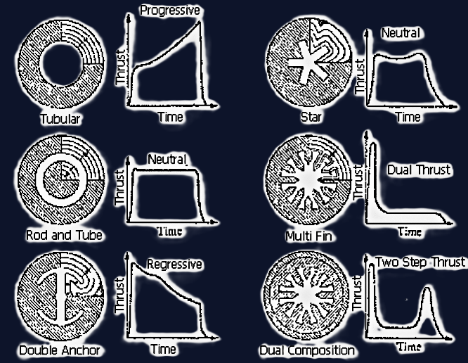

Rocket Theory
This page summarizes key concepts and equations related to rocket design, propulsion, and performance. They are the basis of solid propulsion, and any rocket propulsion engineer should know them. However, it is never a bad time to refresh our memory!
Rocket Design and Performance
The Rocket Equation
The ideal velocity gain imparted by a propulsion system is described by the Tsiolkovsky Rocket Equation. It actually relates the change of velocity of a rocket to the mass ratio before and after the burn.
$$\Delta V_{id}=g_{e}I_{sp}\ln\left(\frac{m_{o}}{m_{f}}\right)=\Delta V+\Delta V_{g}+\Delta V_{D}+\Delta V_{S}$$
- $\Delta V_{id}$: Real velocity gain.
- $\Delta V$: Mission requirements.
- $\Delta V_{g}$: Gravity losses, calculated as $\int_{0}^{t} g(t) dt$.
- $\Delta V_{D}$: Drag losses, calculated as $\int_{0}^{t} \frac{D}{m} dt$.
- $\Delta V_{S}$: Steering losses.
- $m_{o}$: Initial mass of the rocket.
- $m_{f}$: Final mass of the rocket.
Some simplified models and first approximations often neglect the complex terms to get a rough estimation of the propulsive capabilities. Did you know that we need 11.2 km/s to escape Earth gravity?
Structural Efficiency and Mass Ratios
Structural efficiency is measured by the propellant mass fraction ($\xi$). Basically, we want it as close to one as possible since we wnt as much propellant as possible in the rocket.
$$\xi = \frac{m_{p}}{m_{p} + m_{i}}$$
- $m_{p}$: Propellant mass.
- $m_{i}$: Inert mass (structural mass).
- $m_{pl}$: Payload mass.
The mass ratio, $MR$, can be defined for any stage $i$ as:
$$MR_{i}=\frac{m_{o}}{m_{f}}=\frac{m_{pl}+m_{p}+m_{i}}{m_{pl}+m_{i}}$$
For a given stage, the propellant mass can be expressed as follows. If we recall the rocket equation, we can now compute the propellant we need to escape any body based on the inert mass and our payload. Pretty neat, right?
$$m_{p_{i}}=m_{pl_{i}}\frac{MR_{i}-1}{MR_{i}-1 / R_{i}}$$
Rocket Propulsion
Thrust Equation
The thrust, $T$, of a rocket motor is given by the following equation. It can be derived using fluid mechanics principles, by using a control volume approach and applying the integral form of the Navier-Stokes equations.
$$T=\dot{m}_{e}U_{e}+(P_{e}-P_{a})A_{e}$$
- $\dot{m}_{e}$: Mass flow rate.
- $U_{e}$: Exhaust velocity.
- $P_{e}$: Exhaust pressure.
- $P_{a}$: Ambient pressure.
- $A_{e}$: Exhaust area.
The propulsive system is the most efficient when when $P_e=P_a$, condition known as the perfectly expanded. In a vacuum, $P_a=0$, so the thrust is maximized as the pressure term contribution is the largest.
Specific Impulse
Specific Impulse, $I_{sp}$, is a measure of the efficiency of a rocket engine and is defined as:
$$I_{sp}=\frac{T}{\dot{m}g_{e}}$$
This value is key to compare rocket performance, since it relates thrust to propellant consumption. Higher specific impulse indicates a more efficient engine.
Characteristic Velocity and Thrust Coefficient
Characteristic velocity, $c^{*}$, is a measure of the performance of a propellant. It varies depending on the composition of the fuel.
$$c^{*}=\sqrt{\frac{g_{e}RT_{c}}{\gamma}}\left(\frac{2}{\gamma+1}\right)^{\frac{\gamma+1}{2(\gamma-1)}}$$
The mass flow rate, $\dot{m}$, is related to $c^{*}$ by: $$\dot{m} = \frac{P_{c}A_{t}}{c^{*}}$$
Solid Rocket Motors
Solid rocket motors use a single solid propellant grain. Here, both the oxidizer and the fuel are combined into a single solid, using a binder for stability. This is the one I am the most qualified to talk about, since I did my final year thesis on them. The key equation relates the burning rate to the chamber pressure using Vieille's law:
$$\dot{r} = aP_{c}^{n}$$
The chamber pressure, $P_c$, is a function of the propellant properties, port area, and throat area. At steady state operation, the mass flow rate does not accumulate in the combustion chamber, and the one mass generated by the fuel ignition exits the throat. In this case we obtain the following equation for pressure. Of course, at ignition this is not true. In addition, the nozzle is not chocked yet, so we need to set an ordinary differential equation to describe the evolution of the mass in the chamber.
$$P_{c}=\left[\frac{a\rho_{p}A_{s}c^{*}}{g_{e}A_{t}}\right]^{\frac{1}{1-n}}$$
During steady operation for a given geometry and fuel, the pressure in the chamber only depends on the surface of the fuel exposed to the combustion, and subjected to ablation. using this, we can predict the pressure history based on the grain geometry. This picture explains it:
By the way, this image is from nakka-rocketry. They go much deeper than me and are worth checking their page!
Hybrid Rockets
Hybrid Rockets
Hybrid rockets use a solid fuel and a liquid oxidizer. This time, the solid fuel usually has cylindrical ports through its length. The oxidizer is released and its flow rate can be controlled to regulate the combustion. This is why the regression rate is often defined by the oxidizer mass flux:
$$\dot{r} = aG_{ox}^{n}$$
where $G_{ox} = \frac{\dot{m}_{ox}}{A_{p}}$ and $A_{p}$ is the port area.
Liquid Rocket Engines
Liquid rockets use liquid propellants. There are many types being used today by big companies such as SpaceX. They offer the largest controllability and thrust of the industry, which makes them the go-to option for launchers.
Types of Propellant Feeding Systems
There are several ways to feed propellants into a liquid rocket engine. Each one provides its advantages and disadvantages in terms of control, complexity, thrust...:
- Cold Gas Thrusters: These are the simplest, using a compressed inert gas like nitrogen. They offer low thrust and are primarily used for attitude control.
- Pressure-Fed: Propellants are forced from tanks into the combustion chamber using a high-pressure inert gas. This is a simple and reliable method, but the tanks must be very strong and heavy, limiting its use to smaller engines.
- Pump-Fed: The most common method for high-thrust engines, where pumps are used to deliver propellants from the tanks to the combustion chamber. This allows for lighter tanks, as they don't need to withstand high pressure.
Engine Cycles: Open vs. Closed
The engine cycle describes how the turbopumps, which feed the propellants, are powered.
- Open Cycle (Gas Generator): A small amount of propellant/Ox is bled from the main tanks and burned in a separate gas generator to create hot gas. This gas then drives the turbopumps before being exhausted overboard. This simplifies the design but results in a slight loss of efficiency, as part of the mass is dumped.
- Closed Cycle (Staged Combustion): All propellant/Ox is routed back into the main combustion chamber after driving the turbopumps. This is more complex but more efficient, as no propellant is wasted.
Closed-Cycle Variations: Fuel Flow, Oxidizer Flow, and Full Flow
Closed-cycle engines are further divided by which propellant is used to power the turbopumps:
-
Fuel-Rich Staged Combustion:
A preburner runs fuel-rich to drive the turbine and its hot exhaust then completes combustion in the main chamber. It possesses very high efficiency and achievable chamber pressures and allows turbomachinery to operate in a less oxidizing environment. However there is a risk of carbon deposits and turbomachinery fouling, requiring a demanding cooling system.
-
Oxidizer-Rich Staged Combustion:
A preburner runs oxidizer-rich to produce an oxygen-rich drive gas for the turbine, which then feeds the main chamber. This technique is still very efficient and avoids common problems related to fuel-rich gases. However, it creates an extremely oxidizing turbine environment that requires oxidation-resistant materials and complex cooling/ metallurgy. There is also a higher risk of explosion.
-
Full-Flow Staged Combustion (FFSC):
Two preburners (one fuel-rich, one oxidizer-rich) route all propellant through turbines before entering the main chamber. It possesses the highest theoretical efficiency and a lower turbine inlet temperatures per turbine improving turbomachinery life. It also allows to reach very high chamber pressures. Despite this, it has greater complexity with more components, plumbing and controls, leading to higher development cost and assembly challenges.